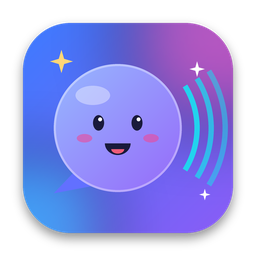
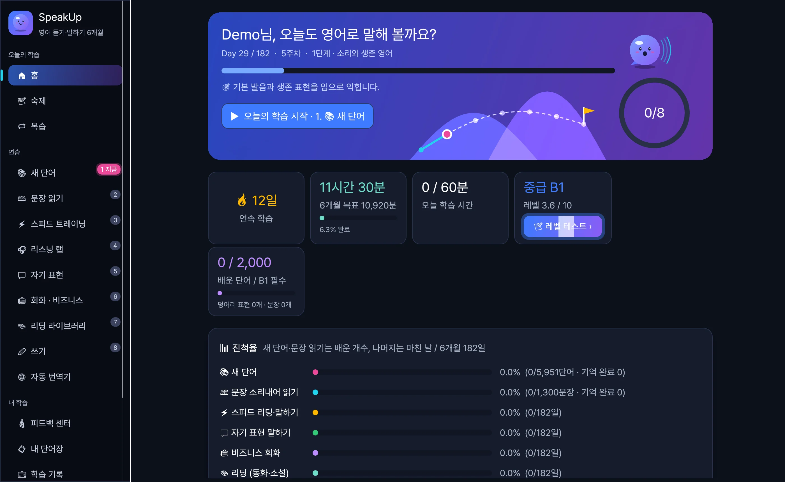
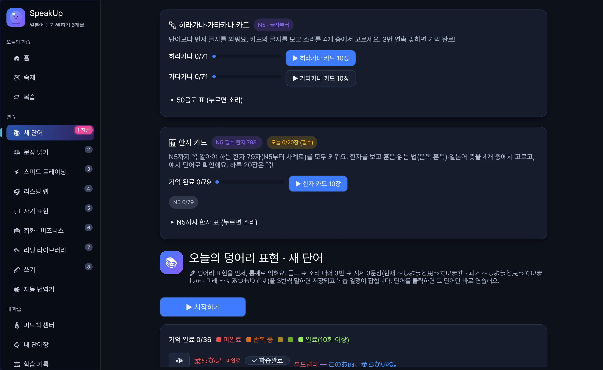
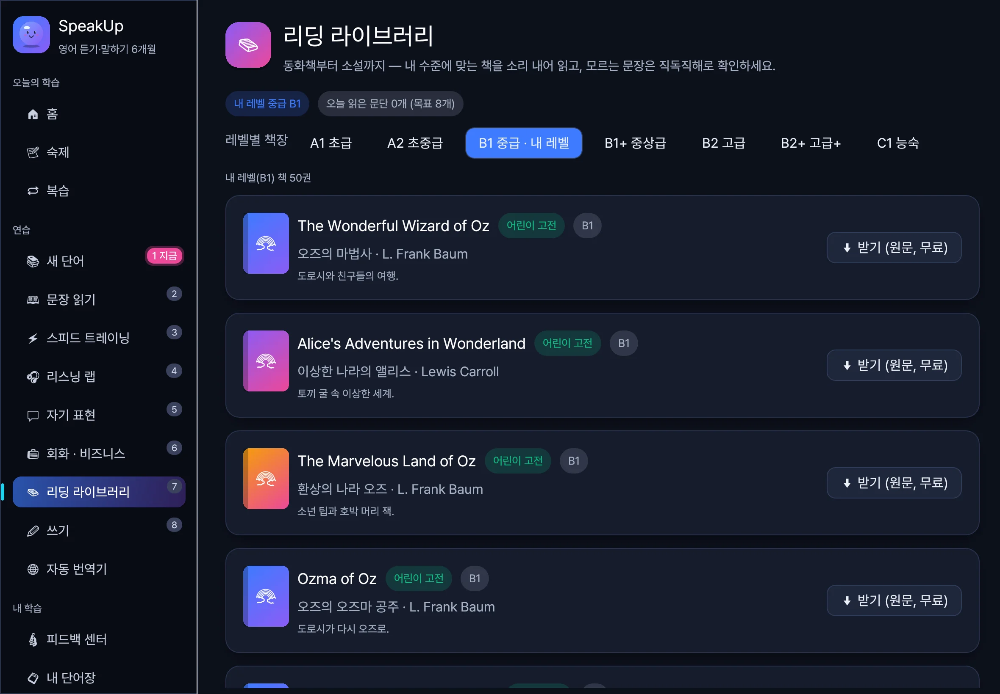
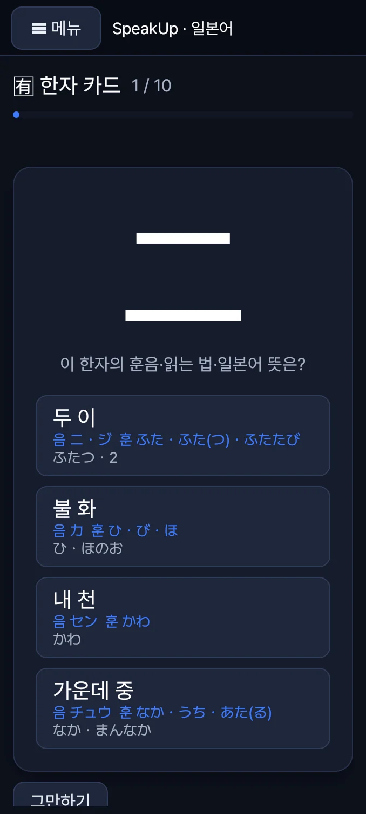
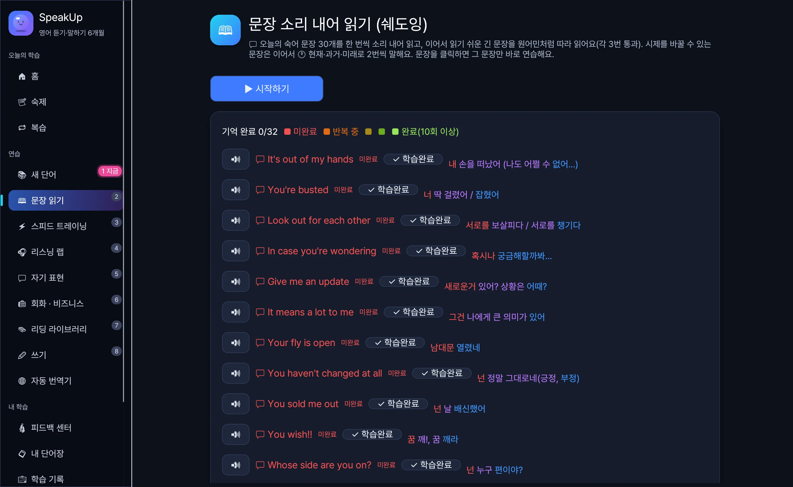
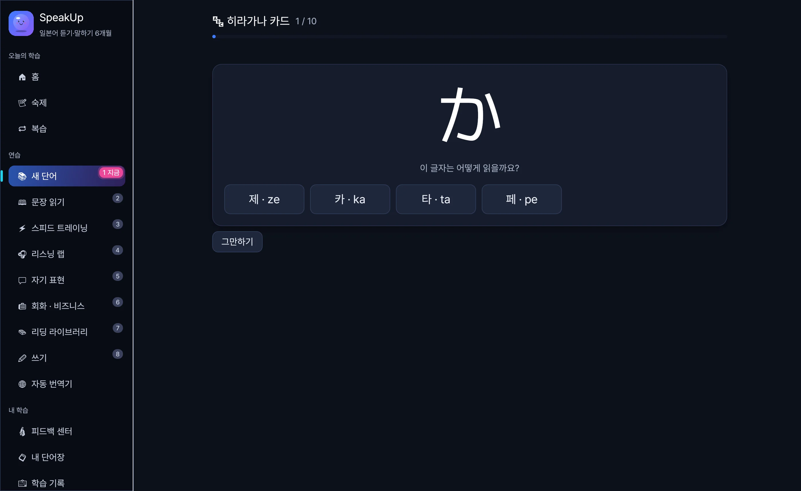

macOS
맥 앱
Apple Silicon(M1 이상) 맥용. 압축을 풀고 SpeakUp 6M.app을 엽니다. 큰 화면에 왼쪽 메뉴와 넓은 학습 화면.

SpeakUp 6M 내려받기소리로 알려 주고, 내 목소리를 듣고, 잘 따라 했는지 바로 알려 줍니다. 한국인을 위한 음성 중심 영어·일본어 학습 앱, SpeakUp 6M.
맥 · 윈도우 · Android 태블릿 · Android 폰, 네 가지 앱 · 무료 · iOS는 직접 빌드 가능
182일 과정 6,000단어 내장 1,300회화 문장 400회화 상황 2,211JLPT 한자

네 가지 앱
영어판과 일본어판 모두 macOS · Windows · Android 태블릿 · Android 폰 네 가지로 나옵니다. 화면 크기에 맞춰 배치가 바뀔 뿐, 학습 과정과 기능은 같습니다.
macOS
Apple Silicon(M1 이상) 맥용. 압축을 풀고 SpeakUp 6M.app을 엽니다. 큰 화면에 왼쪽 메뉴와 넓은 학습 화면.

Windows
Windows 64비트(x64)용. 설치 없이 압축을 푼 폴더에서 바로 실행합니다. 맥과 같은 화면, 같은 기능.

Android 태블릿
가로로 들면 PC와 같은 배치, 세로로 들면 폰처럼 ☰ 메뉴로 바뀝니다. 소파에서 리딩과 카드 학습에 좋습니다.

Android 폰
위쪽 ☰ 메뉴로 화면을 고르고, 모든 화면이 폰 폭에 맞춰 접힙니다. 출퇴근길 단어·카드·쉐도잉. Android 9 이상.
같은 학습 기록을 기기끼리 자동으로 옮기지는 않습니다. 기기마다 따로 기록합니다. iPhone · iPad 앱은 직접 빌드 가능합니다.
학습 비중
그래서 하루의 70%를 말하기와 듣기에 씁니다. 하루 60분, 앱이 정해 주는 순서대로만 하면 6개월(182일) 뒤 일상·업무 주제로 10분 동안 막히지 않고 대화하는 것이 목표입니다.
두 가지 언어
두 앱은 학습 기록을 따로 씁니다. 하나만 깔아도, 둘 다 깔아도 됩니다.
영어 듣기·말하기 6개월
6개월 목표 CEFR B1
일본어 듣기·말하기 6개월
6개월 목표 JLPT N3 회화
하루 학습 루틴
홈 화면의 오늘의 루틴을 위에서부터 차례로 하면 됩니다. 매일 내용이 바뀌고, 이미 배운 문장은 다시 나오지 않습니다. 잊어버릴 때쯤 복습이 따로 돌아옵니다.
어제 어려워한 문장·단어를 다시 말해 확인받기
간격 반복(SRS)으로 잊어버릴 때쯤 다시
하루 새 단어 35개 + 복습 50개. 덩어리 표현 먼저
오늘의 회화 문장 30개를 소리 내어, 단어마다 채점
빨리 읽기, 순발력 말하기, 4/3/2 말하기
원어민 영상으로 구간 반복·쉐도잉, 듣고 대답하기
내 이야기를 30~60초 말하고 AI 피드백
회의·면접·식당 상황극과 자유 회화 400개 상황
내 수준에 맞는 동화·소설, 어려우면 쉬운 말로 다시 쓰기
받아쓰기 · 작문 · 일기와 📅 일기장
따라 말하기 채점
마이크 버튼을 누르고 말하면 오프라인 음성 인식(Whisper)이 알아듣고 단어마다 맞았는지 색으로 보여 줍니다. 통과할 때까지 여러 번 소리 내어 읽게 하고, 말하기 속도도 알려 줍니다.
점수는 음성 인식이 내 말을 얼마나 잘 알아들었는지, 즉 알아듣기 쉬운 정도(명료도)입니다.
🎤 소리 내어 읽기
It's my first time here.
여기는 처음이에요.
80점 · 128 WPM · time을 한 번 더
🎤 音読
今回が初めてなんです。
こんかいが はじめて なんです · 이번이 처음이에요
100점 · 342자/분 · 잘했어요!
직독직해
주어는 빨강, 동사는 파랑, 목적어는 보라. 조각마다 한글 뜻이 붙습니다. 머릿속 번역 습관이 굳지 않도록 한국어 도움은 기간에 따라 줄어듭니다.

일본어판 · 가나와 한자
N5(초급)는 새 단어 맨 앞에 히라가나·가타카나 카드가 나옵니다. 글자를 보고 소리를 고르고, 세 번 연속 맞히면 기억 완료. 그 아래 한자 카드는 내 레벨까지 꼭 알아야 하는 JLPT 한자를 N5부터 차례로 냅니다. 맞히면 그 글자의 소리를 들려준 뒤 바로 다음 카드로 넘어갑니다.
71자 50음도 79N5 한자 612N3까지 2,211N1까지
🈶 한자 카드 · N5 12 / 20
日
이 한자의 뜻과 읽는 법은?
예: 日本(にほん) 일본 · 毎日(まいにち) 매일

오프라인 · 개인정보
음성 인식과 음성 합성 모델은 처음에 한 번만 받습니다. 그 뒤로는 인터넷 없이 듣고, 말하고, 채점합니다. 녹음이 서버로 올라가지 않고, 계정도 없습니다.
기기 안에서 도는 음성 인식. 영어판 142MB, 일본어판 다국어 small 466MB.
신경망 음성 합성. 🐢 천천히 / 🐇 빠르게도 자연스럽고, 한 번 들은 문장은 바로 다시 재생.
AI 피드백·상황극에만 씁니다. 사전·채점·카드는 키 없이도 동작해 비용이 적게 듭니다.
설치
아래에서 내 기기에 맞는 파일을 받습니다.
이름과 API 키를 넣고 음성 인식·AI 음성 모델을 한 번 받습니다. Wi-Fi를 권합니다.
마이크를 점검하고 레벨 테스트를 보면 182일 과정이 시작됩니다.
설치하다 막혔나요?
압축을 푼 앱을 우클릭 → 열기를 누르면 한 번만 묻고 그다음부터는 그냥 열립니다.
추가 정보 → 실행을 누르세요. 압축을 푼 폴더의 .dll 파일은 지우지 마세요.
받은 APK를 열고 이 출처 허용을 켠 뒤 설치합니다. 폰에서는 위쪽 ☰ 메뉴로 화면을 고릅니다.
AI 음성 모델을 받기 전에는 운영체제 음성으로 읽어 줍니다. 설정에서 AI 음성을 받으면 자연스러워집니다.
설정 → 마이크·스피커 점검에서 3초 말하고 다시 들어 보세요. 운영체제의 마이크 권한도 확인하세요.
iOS 버전은 소스코드를 직접 다운로드 받아 빌드하시면 사용이 가능합니다.